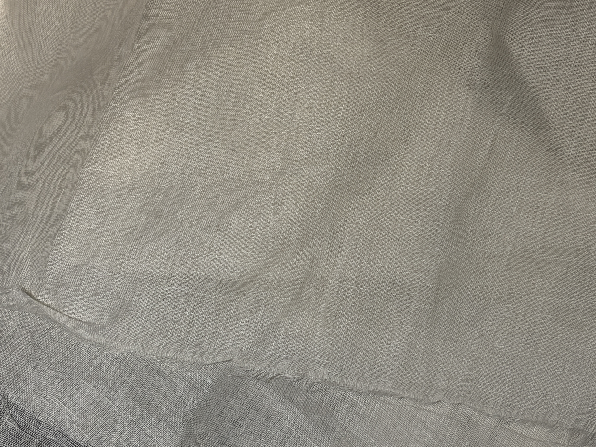
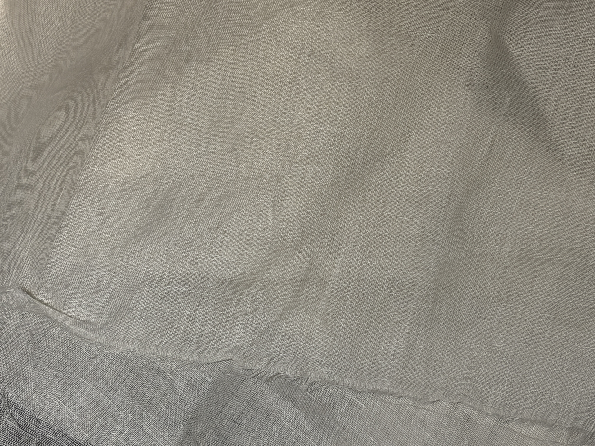

Matière / composition
L’étoffe est composée à 100 % de lin, fibre naturelle d’origine végétale issue de la plante de lin. Le lin est reconnu pour sa grande respirabilité, sa résistance mécanique élevée, ainsi que pour son confort thermique, particulièrement adapté aux climats chauds. Il présente un aspect naturellement irrégulier, caractéristique de cette fibre.
Fil
Le tissu est réalisé à partir de fils de lin de fibres discontinues, généralement filés et peu retordus.
Cette faible torsion met en valeur l’irrégularité naturelle du fil, avec des variations d’épaisseur visibles (effet flammé léger), typiques des étoffes en lin.
Construction textile
Il s’agit d’un textile chaîne et trame.
Armure
L’armure est une toile.
Ennoblissement couleur
La teinte claire et naturelle suggère un tissu écru ou blanchi, obtenu par un ennoblissement de blanchiment.
Ennoblissement d’apprêt
Le tissu peut présenter un apprêt léger d’assouplissement, tout en conservant la main sèche et fraîche propre au lin.
Contexture (chaîne et trame)
- La contexture est aérée à moyennement serrée, avec une structure visible et régulière.
- Le tissu présente une main sèche, légèrement rigide au premier toucher, qui s’assouplit avec l’usage.
- Le tombé est naturel et vivant, avec un froissé spontané caractéristique du lin.
- L’aspect est légèrement transparent à la lumière selon la densité.
Poids et usage imaginé
Le tissu présente un poids léger à moyen, estimé entre 120 et 180 g/m², typique des étoffes en lin destinées à l’habillement estival ou aux pièces légères.
 
